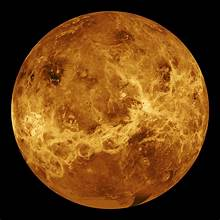

Venus, second planet from the Sun and sixth in the solar system in size and mass. No planet approaches closer to Earth than Venus; at its nearest it is the closest large body to Earth other than the Moon. Because Venus’s orbit is nearer the Sun than Earth’s, the planet is always roughly in the same direction in the sky as the Sun and can be seen only in the hours near sunrise or sunset. When it is visible, it is the most brilliant planet in the sky. Venus is designated by the symbol
